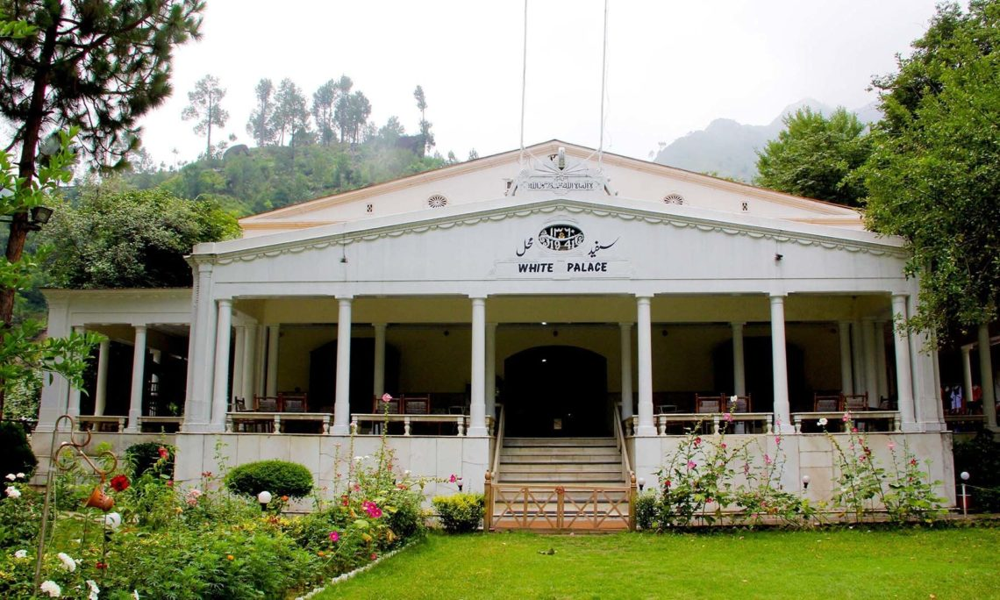
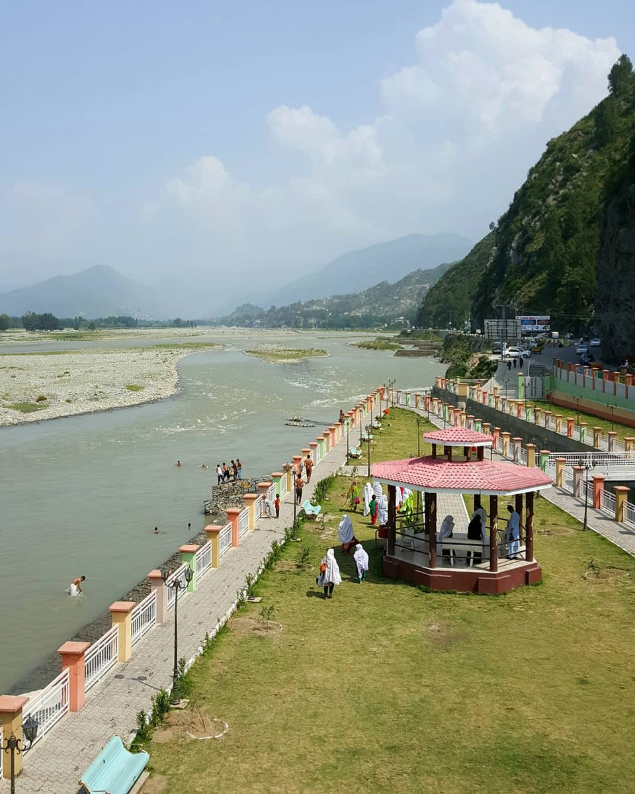
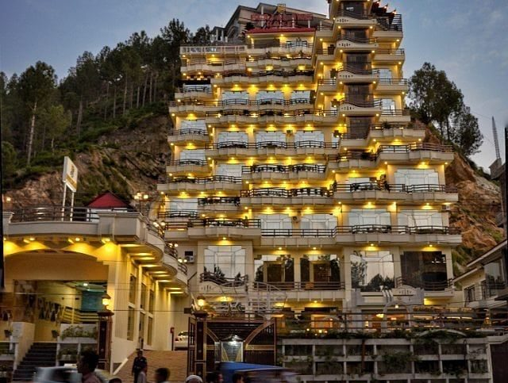
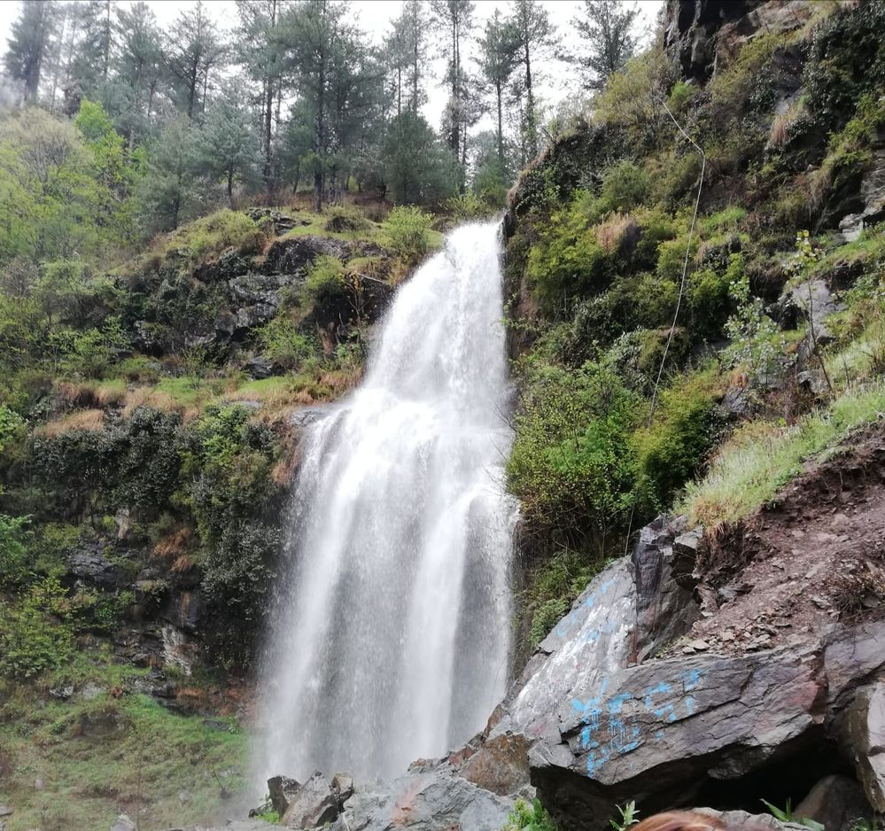
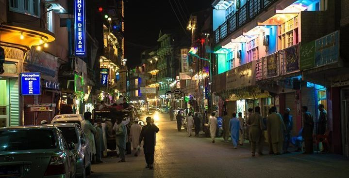

I'm a 21-year-old Data Analyst from Peshawar, pakistan. I've been traveling since I was a kid. I love learning about new cultures and meeting new people. I also love to take photos and videos of my travels, which I share on my blog and social media.
The exquisite view, the lush green mountain areas, the purest Swat Valley and the welcoming nature of the people, I think the heavenly place will last in my memory forever.
Swat is known as the ‘mini Switzerland’ of Pakistan. It constitutes a majority of Pathan community and the best thing that is worth praising about Swat is their hosting, they make their guests feel like home. I first came across the magnificent Darya e Swat; best leisure seeking and the perfect spot to gain peace and harmony. It was as pure as a newborn baby.
Winding up the glorious Swat Valley venture, we travelled to White Palace which is located in Marghazar Valley in Swat.
I was impressed by the flora and fauna of this beautiful place and was eager to learn about the history. Then I came to know that the royal family of Swat used to live in this place. It’s not merely a hotel but a cultural heritage of Swat, Pakistan. The white marbles used in the construction of this Palace was brought from Jaipur in India, the same place where the Taj Mahal’s marble came from. The Bronze used in the ceiling was brought from Belgium, its artisan from Turkey and the electrical equipment were brought from England.
Then later we came around the mirthful Fizagat Park.
f you’re visiting Swat Valley, KPK, you can’t skip this recreational park in the vicinity of Mangora. If you eye the view of Darya e Swat from this park, you’d find it breathtaking. It’s a beautiful place to gather with your loved ones, the hotels around are worth to capture in your travel diaries. At the night, the location spellbound the atmosphere, believe me..
Opposite to the park, we find the Burj Al Swat Hotel, it holds the same value as Burj Khalifa to Dubai.
You must be taken away from the beautiful structure of this hotel, I was also. It’s a multi-story, luxury hotel located opposite to Fizagat park. It’s one of the spacious spots where you can enjoy the city life with state of the art facilities, attend your business conferences and step in with your loved ones. Home to the world-class services and tailor-made programs.
We came across this beautiful Waterfall in Shangla, Pakistan
Nestled deep into the tall mountains, this waterfall give dwellers a mesmerizing experience. The cherry on the cake was the birds chirping and making the scene filled with pleasure. Such a picturesque natural beauty. The whole Shangla is surrounded by thick mountains full of forests making it a must place to visit.
Then we headed to Bahrain.
The hustling and bustling of Bahrain reminded me of Karachi. We took a pause to shop and explore this Bazaar. Here, men dominate the streets and earn the livelihood of their family. Their day starts early in the morning and they wind up after Isha prayers. That’s the reason you’ll never find any men complaining about the crisis in their business. Allah has blessed their business with Barakah, Alhamdulillah